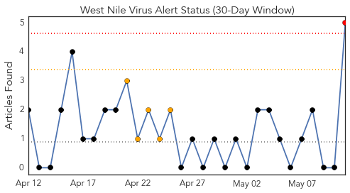
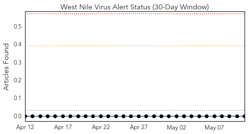
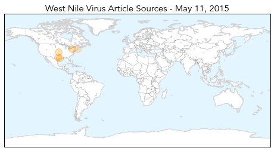
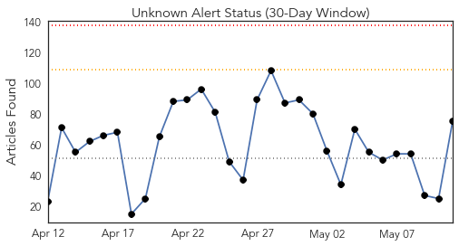
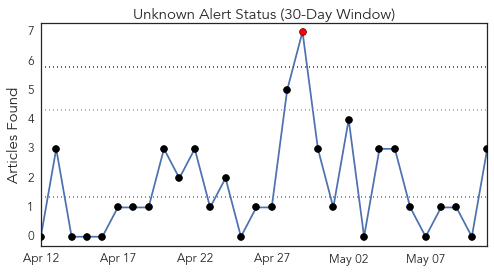
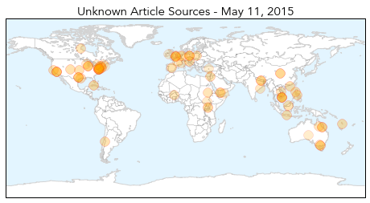

West Nile Virus
30-Day Web Trend
1 alerts, 5 warnings

30-Day Twitter Trend
0 alerts, 0 warnings

Article Locations
Article Confidences
Top Articles:
- 0.997
- West Nile, more than a river in Egypt
- 0.987
- STONE: Recent rains bring threat of mosquito-borne illnesses
- 0.985
- Biting back: Scientists aim to forecast West Nile outbreaks
- 0.977
- The High Cost Of Treating People Hospitalized With West Nile Virus
- 0.642
- Despite Spread of Lyme Disease, Massachusetts Dedicates No Money to Prevention
Top Tweets:
-
No tweets found for May 11, 2015
Unknown
30-Day Web Trend
0 alerts, 0 warnings

30-Day Twitter Trend
1 alerts, 0 warnings

Article Locations
Article Confidences

Top Articles:
- 0.976
- Lyme disease: Doctors advise against long-term antibiotic treatment Republican American
- 0.966
- Vanuatu: Spreading life-saving information across Vanuatu
- 0.917
- Chicago Tribune
- 0.917
- Chicago Tribune
- 0.917
- Chicago Tribune
- 0.917
- Chicago Tribune
- 0.917
- Chicago Tribune
- 0.917
- Chicago Tribune
- 0.917
- Chicago Tribune
- 0.917
- Chicago Tribune
- 0.917
- Chicago Tribune
- 0.917
- Chicago Tribune
- 0.917
- Chicago Tribune
- 0.917
- Chicago Tribune
- 0.917
- Chicago Tribune
- 0.917
- Chicago Tribune
- 0.917
- Chicago Tribune
- 0.917
- Chicago Tribune
- 0.917
- Chicago Tribune
- 0.917
- Chicago Tribune
- 0.917
- Chicago Tribune
- 0.917
- Chicago Tribune
- 0.917
- Chicago Tribune
- 0.917
- Chicago Tribune
- 0.917
- Chicago Tribune
- 0.915
- Antibiotic-Resistant Typhoid Spreading Across Asia, Africa
- 0.911
- More Ross River virus cases in mid-west sparks WA Country Health Service warning
- 0.910
- The world windows to Thailand
- 0.910
- The world windows to Thailand
- 0.910
- The world windows to Thailand
- 0.904
- Yemen Conflict – WHO calls for urgent scaled up health response
- 0.899
- CDC to help Washington state find source of E. coli outbreak at milk fest
- 0.899
- Over 600 new HIV cases recorded in March
- 0.892
- Drug-resistant typhoid now 'epidemic' in Africa
- 0.866
- Drug-resistant typhoid now 'epidemic' in Africa - World
- 0.854
- Antibiotic-Resistant Typhoid Spreading Across Asia, Africa – WebMD
- 0.854
- Federal government looks into Lyme disease
- 0.846
- Drug-resistant typhoid now ‘epidemic’ in Africa
- 0.846
- Nosode homeopathic labels too weak, pediatricians tell Health Canada
- 0.832
- Sudan Vision Daily
- 0.815
- Antibiotic-Resistant Strain of Typhoid Fever spreading fast
- 0.814
- Superbugs, public health, drug-resistance
- 0.801
- Sudan Vision Daily
- 0.753
- Lyme disease in Australia: Sarah Belmonte says we need to talk
- 0.753
- Southeast Queensland’s freak storm prolongs Ross River virus outbreak
- 0.710
- EHV-1 precautions sideline multiple upcoming MW horse shows
- 0.705
- Dearth of Doctors Cripples Healthcare
- 0.703
- Antibiotic-Resistant Typhoid Spreading Concern Among Medical Experts
- 0.701
- How city health centres struggle to cope in the face of Mulago
- 0.658
- Drug-resistant typhoid now 'epidemic' in Africa.
Showing top 50 articles...
Top Tweets:
- 0.715
- It’s National Women’s Health Week! Remember to make flu prevention a health priority next season. Learn how: http://t.co/ywSPJ6ubJH NWHW
- 0.591
- RT: @Lola69Rivera Por razones de economía se comenzó a hacer el triángulo de nuestra bandera con la misma tela de la bande…
- 0.514
- Even in relatively mild cases, malaria can cause high fever, chills, flu-like symptoms, and severe anemia http://t.co/DV5yr4fL5N